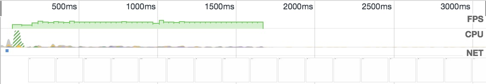
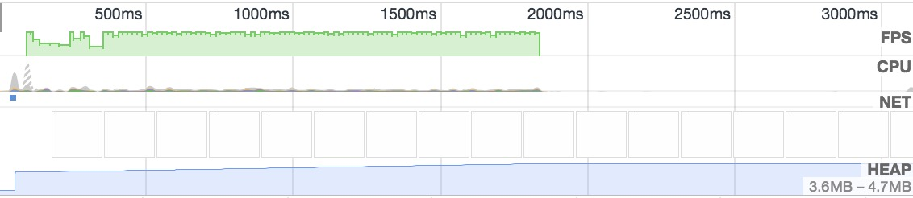
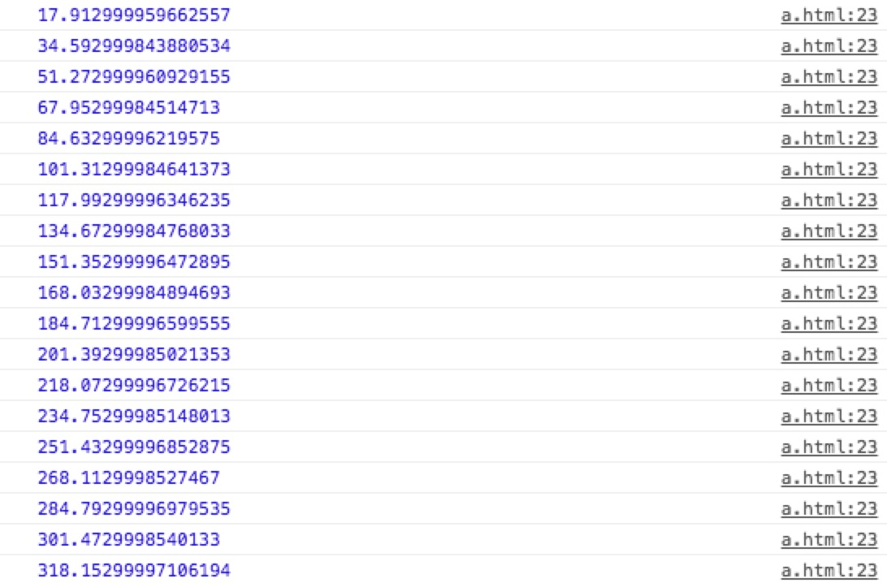

最近需要实现一个数字变化的动画效果，研究了下 requestAnimationFrame 的用法。
动画的概念是，当我们把一定数量的、有细微差别的静态图片按照一定速率（通常为 16 张/秒）连续播放的时候，人的肉眼因视觉暂留，会认为这些图片中的动作是连续的。对应到前端开中，每一帧就是一张图片，那么我们只要精确控制每一帧的显示，就能形成一个完整的动画。
古老的做法是使用 setInterval，一个计数器的例子如下：
1 2 3 4 5 6 7 8 9 10 11 12 13 14
| <p>计数器：<span id='timer'>0</span></p> <script> const el = document.querySelector('#timer') const num = 100 let time = 0 function animate(ts) { if (time < num) { time++ el.innerText = time } } setInterval(animate, 16) </script>
|
改成 requestAnimationFrame 的方式来实现如下：
1 2 3 4 5 6 7 8 9 10 11 12 13 14 15
| <p>计数器：<span id='timer'>0</span></p> <script> const el = document.querySelector('#timer') const num = 100 let time = 0 function animate(ts) { if (time < num) { time++ el.innerText = time requestAnimationFrame(animate) } } requestAnimationFrame(animate) </script>
|
前后两种方式实现性能表现在 Chrome v58 的 FPS 截图如下


可以看到使用 requestAnimationFrame 的性能比使用 setInterval 的高不少。
可以看到 setInterval(animate, timestep) 里面控制动画速度的参数为 timestep，那么怎么控制 requestAnimationFrame 版本里面的动画速度呢？
1 2 3 4 5 6 7 8 9 10 11 12 13 14 15 16 17 18 19 20 21 22 23
| const el = document.querySelector('#timer') const num = 100 const speed = 1000 / 30 let time = 0 let start let delta function animate(ts) { if (time < num) { requestAnimationFrame(animate) if (!start) { start = ts } delta = ts - start if (delta < speed) { return } time++ el.innerText = time start = ts } } requestAnimationFrame(animate)
|
这里需要解释一下上述 animate 函数的参数 ts。这个参数为 DOMHighResTimeStamp 类型的参数，标示当前时间距离再次触发 requestAnimationFrame 回调的时间。

每两个时间的差大约为 16.67ms，这其实对应了当前显示器的刷新间隔，测试显示器的刷新频率为 60Hz。基于上述几点，我只要控制每次调用 requestAnimationFrame的时间就好了，例如代码里面的 speed = 1000 / 30。但是，speed 本身也不能小于当前显示器的刷新间隔（本例中的 1000 / 60 = 16.67）。如果我要实现一个计时器，只需要 speed = 1000即可。
参考文章：
window.requestAnimationFrame()